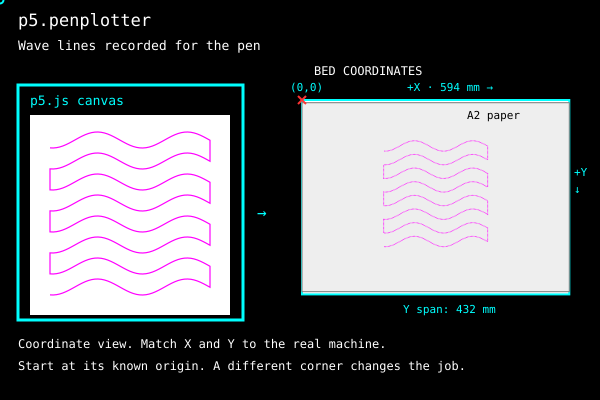
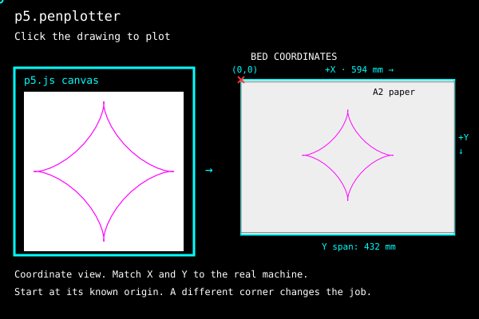
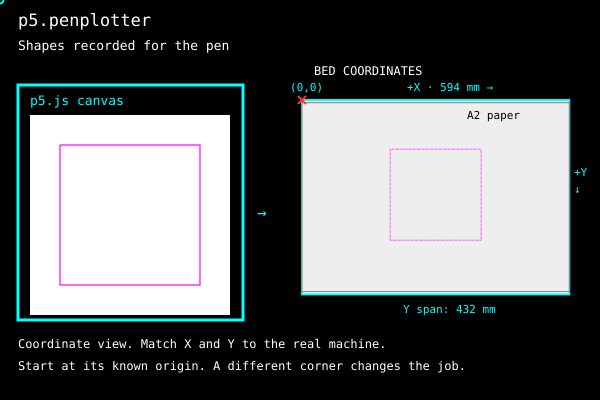
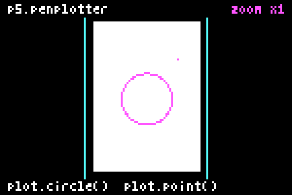

Guide
Change the drawing, place it on paper and choose how to plot it.
1. Draw on screen
Copy index.html from Setup, then use this sketch.js. It draws a rectangle and a circle without opening a plotter connection.
sketch.js
let plot;
function setup() {
createCanvas(400, 250);
plot = createPlot({ paper: "A4", margin: 12, width: 80 });
noLoop();
}
function draw() {
background(255);
noFill();
plot.clear();
plot.rect(10, 10, 380, 230);
plot.circle(200, 125, 80);
}background() clears the screen; plot.clear() starts a new recording. noLoop() keeps this drawing still. Use explicit coordinates; screen transforms and styling are not recorded. See the recording limits.
2. Change the drawing
Replace the two shape calls in draw() with this loop. Keep setup(), background(), noFill() and plot.clear().
const points = [];
for (let x = 40; x <= 360; x += 4) {
points.push({
x,
y: 125 + 40 * Math.sin(x * 0.04)
});
}
plot.polyline(points);
40 above to 10. For a different use of the same idea, open the wave field and press R for another seed.3. Drawing size and paper
A 400 × 250 pixel canvas with createPlot({ paper: "A4", margin: 12, width: 80 }) maps to an 80 × 50 mm area centred on A4 paper. The rectangle from (10, 10) to (390, 240) occupies 76 × 46 mm inside it. Choose the paper and margin first. Use paperX/paperY to move the sheet; x/y place the canvas area in millimetres from home.
A4 is 210 × 297 mm in portrait or 297 × 210 mm in landscape. A3 is 297 × 420 mm; A2 is 420 × 594 mm. With explicit width, the drawing keeps that width. Without width, the paper option fits the canvas automatically inside the margins. The HSE/A2 bed is 594 × 432 mm, with X along the long rail. Place and orient your paper inside that area, then choose the drawing’s width and position.
Choose A2 directly
let plot;
function setup() {
createCanvas(400, 250);
plot = createPlot({ paper: "A2", margin: 12 });
noLoop();
}
function draw() {
background(255);
noFill();
plot.clear();
plot.rect(10, 10, 380, 230);
plot.line(30, 125, 370, 125);
plot.go();
}Use the index.html from Setup and replace its sketch.js with the code above. The canvas fits proportionally inside a 12 mm margin on A2. On the HSE/A2, paper is 594 × 420 mm at X = 0, Y = 6 mm. This canvas maps to 570 × 356.25 mm, centred on it. This is a full-sheet drawing, larger than the first 80 mm test. Put the real paper at that position. Add plot.showBed() after recording the shapes to see the selected paper and placement.
paper accepts A0–A6. Default orientation: "auto" follows the canvas aspect ratio and tries the other orientation if needed to fit the bed. Explicit "portrait" or "landscape" is honoured or refused. margin defaults to 12 mm. paperX/paperY move the sheet; x/y locate the canvas. width or mmPerPixel overrides fitting. plot.paper reports the resolved sheet. Invalid paper placement or strokes outside the margins are refused before plotting.
Move the paper
plot = createPlot({
paper: "A4",
orientation: "portrait",
margin: 12,
paperX: 60,
paperY: 100,
width: 120
});The sheet starts 60 mm along positive X and 100 mm along positive Y from home. The drawing stays 120 mm wide and is centred on that sheet. Add x/y when the drawing needs another position within the paper margins. Put the real paper at the same position.
Preview a separate sheet
For a sketch without the paper option, show the actual sheet separately from the canvas area:
// After recording the drawing; bedCanvas is a separate HTML canvas.
plot.drawBed(bedCanvas, {
sheet: { x: 60, y: 100, width: 210, height: 297 } // A4 portrait, mm
});This shades the A4 paper and draws the planned strokes at their existing position. It does not move or scale them. Without sheet, the preview uses selected plot.paper, or the mapped canvas when no paper was selected. To place A4 in landscape, use width 297 and height 210; that changes the paper preview only. For quarter-turn placement of a complete job, use the core’s paper and bed panel.
4. Start a plot
Add plot.go() at the end of draw(), after recording every shape. It waits for your click; it does not start a machine while the page loads. Check the connection requirements before the first plot. Park the carriage at the physical origin that matches the driver, place the paper to match the preview, then click the drawing and choose the serial port. The click confirms the plot. Another click requests a stop.
After a stop or error, check the machine and park the carriage at home before starting another job.

Two ways to work
Draw everything and plot once. Or draw and plot one object, wait until it finishes, then make the next.
Draw everything, then plot
Draw all the shapes and start one plot. Choose strategy: "drawn" to keep the drawing order.
Draw and plot one object, then the next
Keep the same plot and paper settings. Plot one object, wait until it finishes, clear the recording with plot.clear(), then draw the next. With separate go() calls, the planner orders the current object and the carriage returns home after each plot. sequence() below keeps the position between objects and returns home after the last one.
go() keeps the recording. Without clear(), earlier objects are plotted again. That can be a deliberate second pass. clear() does not remove ink.
Wait until an object finishes before adding the next. A sequence uses one pen; sending new lines while the machine draws is not supported yet.
// Call from a button or key handler, using the existing plot.
async function plotTwoObjects() {
plot.clear();
plot.rect(10, 10, 100, 80);
const first = await plot.go();
if (first.status !== "complete") return;
plot.clear();
plot.circle(200, 125, 60);
await plot.go();
}Call plotTwoObjects() from a button or key handler after creating plot with the starter setup. Each go() can ask for confirmation or wait for another click. For one initial click to plot successive objects, use sequence() below. Add the next object only after status: "complete"; a cancelled, stopped or failed job has not completed the object. Keep paper and placement settings consistent between jobs.
One click with sequence()
Keep the starter’s setup() and replace draw() with the code below. plot.sequence(prepare) starts with one click. It clears the recording before each call to your function, plots that object and waits before calling again. The index starts at zero and increases after each completed object. Return false when finished. The carriage returns home after the last object. Chaos game shows this with one point at a time and includes a screen demo.
function draw() {
background(255);
noFill();
plot.sequence(index => {
if (index === 5) return false;
plot.circle(50 + index * 60, 100, 30);
return true;
}).catch(console.error);
}Shapes and fills
plot.… records these 2D shapes: point, line, circle, ellipse, arc, rect, square, triangle, quad, plus polyline and polygon, which take [x, y] pairs or { x, y } objects. Angles follow angleMode(). A point is recorded as a 0.24 mm dash. Rectangles use corner coordinates; ellipse and arc coordinates refer to their centre. Rounded rectangles and screen transforms are not recorded.
plot.square(30, 10, 40);
plot.triangle(80, 50, 120, 10, 160, 50);
plot.arc(330, 30, 40, 40, 0, HALF_PI, PIE);
plot.polygon([[0, 0], [40, 0], [40, 40]]);
Fills come from the core and are drawn back on the canvas, so screen and paper show the same hatching. Spacing is in millimetres on the bed.
let square = [[20, 80], [120, 80], [120, 180], [20, 180]];
plot.hatch(square, 3, PI / 4); // spacing in mm, angle
plot.crossHatch(square, 4); // second direction at right angles
plot.stipple(square, 150, 3); // count, seed
plot.point(): the recorded point is a 0.24 mm dash. A row of points becomes a texture, even though every mark is a very short line.Complete drawing starters
Three p5 sketches using the index.html from Setup. Replace sketch.js with one of them.
Rings
let plot;
function setup() {
createCanvas(600, 600);
plot = createPlot({ paper: "A2", margin: 12, width: 300 }); // 300 mm wide, centred on A2
noLoop();
}
function draw() {
background("#ffffff");
noFill();
plot.clear();
for (let d = 40; d <= 560; d += 20) plot.circle(300, 300, d);
plot.go(); // click the drawing to plot
}A wave, twenty times
let plot;
function setup() {
createCanvas(600, 600);
plot = createPlot({ paper: "A2", margin: 12, width: 300 });
noLoop();
}
function draw() {
background("#ffffff");
noFill();
plot.clear();
for (let row = 0; row < 20; row += 1) {
let points = [];
for (let x = 40; x <= 560; x += 4) {
points.push([x, 60 + row * 25 + 10 * Math.sin((x + row * 9) * 0.03)]);
}
plot.polyline(points);
}
plot.go();
}Tone from lines
let plot;
function setup() {
createCanvas(600, 600);
plot = createPlot({ paper: "A2", margin: 12, width: 300 });
noLoop();
}
function draw() {
background("#ffffff");
noFill();
plot.clear();
for (let i = 0; i < 8; i += 1) {
let x = 40 + i * 65;
let cell = [[x, 250], [x + 55, 250], [x + 55, 305], [x, 305]];
plot.hatch(cell, 6 - i * 0.65, QUARTER_PI); // spacing in mm on the bed
plot.polygon(cell);
}
plot.go();
}Finished versions of these, and more, are on Examples; what a plotter can do beyond them is on the engine's Possibilities page.
Core access and route planning
plot.engine gives you the core: layers, pens, cleanup, route planning and exports. createPlotterEngine() creates a core engine directly; its shapes are recorded but not drawn on screen.

plot.plan({ strategy: "drawn" }) with plot.plan({ strategy: "nearest" }). Keep the drawn order when watching the picture appear is part of the work.
plot.engine.pen() and plot.engine.layer(), and set the p5 screen colour separately with stroke(). Assigning a pen does not pause the machine. For direct plotting with multiple pens, supply an onToolChange callback to plot.go() that waits for you to finish each physical pen change.
plot.engine.importSVG() reads supported SVG geometry; the engine can then export SVG, HPGL or G-code. Try the engine’s SVG to pen page with a simple drawing of your own.Instance mode
For several sketches on one page, use the instance-mode setup.
Adapter reference
| Call or option | Units and behaviour |
|---|---|
createPlot(options) | Returns a P5Plot. Shape coordinates are canvas pixels. width, x and y are millimetres; without paper or scale options, one pixel maps to one millimetre. |
paper, margin, orientation | A0–A6; default margin 12 mm and orientation auto. Fits and centres the canvas. width or mmPerPixel overrides fitting; paperX/paperY move the sheet. |
clear(), plan(options) | Clear starts an empty recording. Plan returns the core PlotPlan and checks selected paper margins. strategy: "drawn" preserves drawing order. |
sequence(prepare, options) | One click starts the sequence. Clears before preparing each object and waits for completion. Return false to finish. Use plan to choose drawing order. |
showBed([canvas]) | Shows the bed and paper with a red origin cross. Creates and reuses a separate preview when no canvas is supplied. Call after recording the drawing. |
drawBed(canvas, { sheet }) | Uses a separate HTML canvas or 2D context. Sheet position and size are millimetres; defaults to selected paper, then mapped canvas. |
go(), stop() | Go from setup/draw waits for a click and needs the installed driver. Stop requests an abort; neither is a preview method. |
createPlotterEngine(), drawRoute(plan) | Advanced core route. Engine geometry uses document units; its circle takes a radius. DrawRoute displays plan coordinates directly as pixels; it does not convert millimetres back to sketch pixels. Use showBed for a physical placement preview. |
Architecture describes the recording limits.